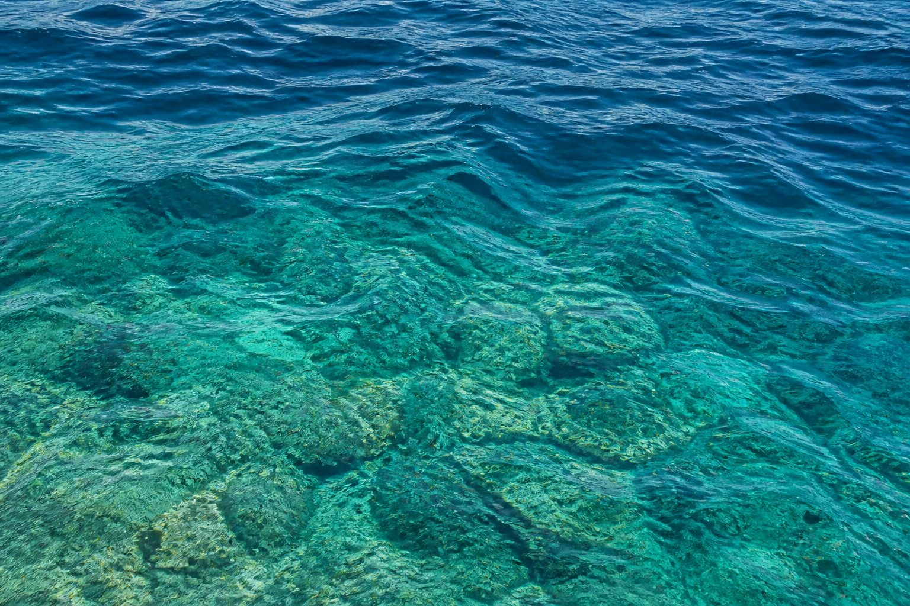
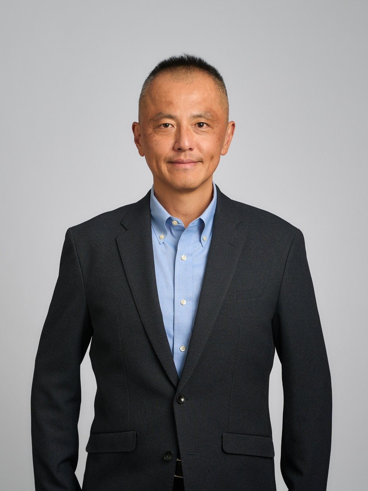

Mind
Treat inner life with science
The cognitive science of emotion, and the MHQ mental health questionnaire. Notice your own tendencies, and turn attention toward what to improve.
Mind · Society · Environment
Inner life, human systems, and the living planet. We reconnect what is too often treated as separate, through cognitive science and practical HR.
MISSION
社会と個人の変容をガイドする
Kocorolab (Kocoro Laboratory) is a Yokohama laboratory that reconnects mind, society, and environment, bridging cognitive science and HR practice.
Inner life, human systems, and the living planet. We treat the three as one piece of work, not as separate fields.
Mind
The cognitive science of emotion, and the MHQ mental health questionnaire. Notice your own tendencies, and turn attention toward what to improve.
Society
Leadership education, HR, and organization building, informed by work as head of HR in pre-IPO and listed companies.
CORE

01 · Mind
The cognitive science of emotion, and the MHQ mental health questionnaire. Notice your own tendencies, and turn attention toward what to improve.

02 · Society
Leadership education, HR, and organization building, informed by work as head of HR in pre-IPO and listed companies.

03 · Environment
Practice also between society and planet, including MIT Sloan IDEAS Asia Pacific and Citizens’ Climate Lobby Japan’s nonpartisan citizen dialogue on climate.
SERVICES
We keep this to one page. Updates and brochures go to News & activities.
Teaching and research at GLOBIS University and MIT Sloan IDEAS Asia Pacific, including Theory U.
For mental load, communication, and how work gets done: a way to notice your own tendencies and turn attention toward them. 120 questions, about 12–15 minutes. For companies and for individuals. Read it with the two recent books.
HR systems, training, coaching, and research.
News & activities
Occasional notes: IDEAS brochures, MHQ updates, talks, and public materials. This is not a diary blog.

BIO
東京工業大学大学院修了、博士（学術 / 認知科学）。人事・チェンジマネジメントと適性検査の事業開発を経て独立し、メンタルヘルス検査 MHQ を発売。フィリピン・ドゥマゲテでは Starting Point English Academy（SPEA）校長として、街での実践型の学びと現地の組織運営に携わり、グローバル人材育成と人事統括にも従事。バリのグリーン・スクールを参考に、現地の人も通える学びの場を目指していました。事業会社の人事責任者を経て、株式会社グロービス、グロービス経営大学院 専任教員。MIT経営大学院グローバルプログラム IDEAS Asia Pacific 修了、同リージョナル・ファカルティ、株式会社ココロラボ代表取締役。
専門は認知科学（感情研究）。人間の感情や意思決定のメカニズムを探求する学術的知見を基盤に、経営大学院でのリーダーシップ・倫理・価値観教育や、企業における組織行動・人財開発に従事。U理論やシステム思考をベースに、個人の内面から組織、地域、気候変動をはじめとする地球システム全体までを俯瞰し、万物のウェルビーイングを最大化するための実践・アクション研究を展開している。
市民気候ロビージャパン代表（気候変動についての超党派の対話）、およびNPO法人セブン・ジェネレーションズ監事。文章はnoteとMediumでも公開しています。
Ph.D. in Cognitive Science, Tokyo Institute of Technology. After HR and change-management consulting and work in talent and assessment, he launched the MHQ mental health questionnaire. In Dumaguete, Philippines, he served as principal of Starting Point English Academy (SPEA), working on experiential learning in the city and local operations, and also led global talent development and HR. Drawing on Bali’s Green School, SPEA aimed at a place local families could also attend. He later served as head of HR in operating companies, then joined GLOBIS Corporation. He is Associate Professor and Research Faculty at Globis University Graduate School of Management, Regional Faculty for MIT Sloan Global Program IDEAS Asia Pacific, and Representative Director at Kocorolab Inc.
Holding a Ph.D. in Cognitive Science with a research focus on human emotion, his work integrates cognitive science with systemic leadership, ethics, and action research. Guided by systems thinking and Theory U, he leads interdisciplinary initiatives bridging academic research, executive education, and global sustainability movements to optimize overall well-being across individuals, organizations, and the planetary system.
Citizens’ Climate Lobby Japan (Japan representative; nonpartisan citizen dialogue on climate) and NPO Seven Generations (auditor). Writing is also on note and Medium.
In the Philippines he kept at two things: learning that local families could join, and the question that society does not change if public education is left behind.
He served as head of human resources at both a pre-IPO growth company and listed operating companies.
Ongoing work includes the Japanese Cognitive Science Society. In 2025 he published “The cognitive affective model of theory U” in the 42nd Annual Meeting proceedings (pp. 466-469).
CONTACT
For corporate HR, speaking or media requests, research partners, and individual MHQ2 applications — reach us directly here.